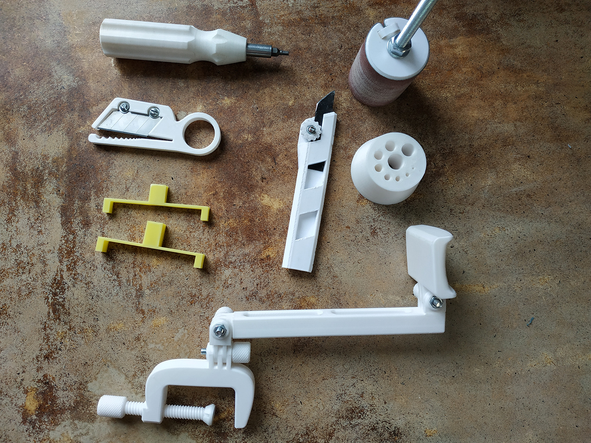

Данный проект служит для того, чтобы воплощать в жизнь, в реальность Ваши идеи, изобретения, разработки, а также предметы и объекты искусства и не только. Все что нужно - это 3d модель или скетч, а оборудование с числовым програмным обеспечением с поразительной точностью и в автоматическом режииме воплотит биты информации в физическую форму!
Фрезерный станок с ЧПУ поможет изготовить детали, элементы декора, барельефы и т.д. А 3D притнер поможет изготовить сложные прототипы, фигуры и практически любые 3D модели.
Все не ограничевается Вашим воображением, а Ваше воображение расширяется благодаря нашим возможностям!
3D печать
3D печать пластиками PLA и PetG экологически чиста и безопасно для здоровья в процессе эксплуатации.

PLA - (полилактид) биоразлагаемый пластик для производства которого используется кукуруза или сахарный тростник. Экологически чистый материал, который, однако, не предназначен для употребления в пищу.
Пластик хорошо зарекомендовал себя при печати сувенирной продукции, прототипирования, изготовления предметов искусства. Хоть он не предназначен для использования в механизмах с нагрузкой, не стоит его недооценивать. Он достаточно прочный и твердый, что иногда гораздо важнее чем высокая гибкость. Вследствии этого он более хрупкий и ломается при динамических нагрузках, а не сгибается, как, к примеру, PetG.
PetG - (Полиэтилентерефталатгликоль) разновидность широко применяемого пластика PET который используется при изготовлении тары для пищевых продуктов. PetG как и PET довольно инертен и не вступает в реакцию с пищевыми продуктами. Пластик более пластичен по сравнению с PLA и больше подходит для прототипирования механизмов и эксплуатации с небольшими нагрузками.
ЧПУ фрезеровка
ЧПУ фрезеровка позволяет изготавливат 2.5D модели по CAD чертежам или 3D моделям. В фрезеровке используются такие материалы как дерево, пластик и даже мягкие металлы вроде алюминия или меди.
Предметы интерьера, различные декоративные предметы и барельефы, а также механизмы, детали - все это возможно реализовать при помощи фрезерования с применением числового программного управления.
В разделе Товары Вы можете заказать изготовление предметов из библиотеки сайта или купить уже готовые изделия. Доставка осуществляется по согласованию с заказчиком.